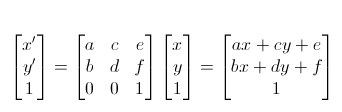

<!DOCTYPE html>
<html>

	<head>
		<meta http-equiv="Content-Type" content="text/html; charset=UTF-8" />
		<meta name="viewport" content="width=device-width, initial-scale=1.0, minimum-scale=1.0, maximum-scale=1.0,user-scalable=no" />
		<title>无标题文档</title>
		<style type="text/css">
			html,
			body {
				width: 100%;
				height: 100%;
				padding: 0;
				margin: 0;
				overflow: hidden
			}
			
			img {
				transform:matrix(1,0,0,1,1,50,100)
			}
		</style>
		<script type="text/javascript" src="js/jquery-1.7.2.min.js"></script>
	</head>

	<body>
			<!--			 getComputedStyle是一个可以获取当前元素所有最终使用的CSS属性值。
					返回的是一个CSS样式声明对象([object CSSStyleDeclaration])，只读。-->
			
					
					 
					 <!--* 语法如下：
					 * var style = window.getComputedStyle("元素", "伪类");
					 * 例如：
			
					var dom = document.getElementById("test"),
			    	style = window.getComputedStyle(dom , ":after");
			    	
			    	
			    	提示下：Gecko 2.0 (Firefox 4 / Thunderbird 3.3 / SeaMonkey 2.1) 之前，第二个参数“伪类”是必需的（如果不是伪类，设置为null）。
					 -->
					
					
					<!---->
					<!--					  这就是矩阵的运算了，简化为公式：-->
										 
					<!--x’=ax+cy+e
					y’=bx+dy+f
					
					所以给定一个matrix矩阵，通过上面的公式变换就可以得到不同的效果，这关系到计算机图形学（省略1w+字..）
					
					css3的transform属性很好用，其实可以变换为matrix矩阵工作，只需要给abcdef附上相应的值就可以了。
					比如translate(tx,ty)可以由matrix(1,0,0,1,tx,ty)转换而来，计算方法见公式
					scale(sx,sy)可以由matrix(sx,0,0,sy,0,0)转变
					rotate(θ)可以有matrix(cosθ,sinθ,-sinθ,cosθ,0,0)转变而来
					skew(θx，θy)可以由matrix(1,tan(θy),tan(θx),1,0,0)转变过来-->
					 
				

<script>
//	for(var a = 1;a<=9;a++){
//		for(var b = 1;b<=a;b++){
//			document.write("<span>"+ a +"*"+ b +"="+(a*b)+"</span>")
//		}
//		document.write("<br/>");
//	}
//	for(var a= 1;a<=9;a++){
//		for(var b= 1;b<=a;b++){
//			document.write(a+"*"+b+'='+(a*b));
//		}
//		document.write("<br/>");
//	}
				var name = /jin/;
				alert(typeof name);
</script>

					
	</body>

</html>